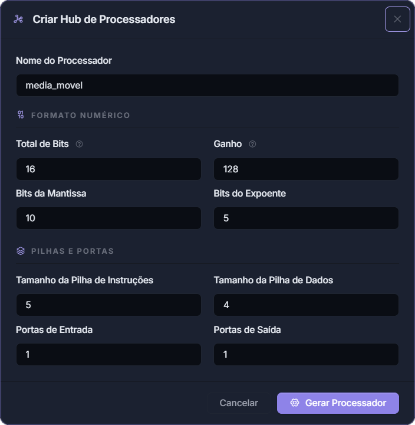
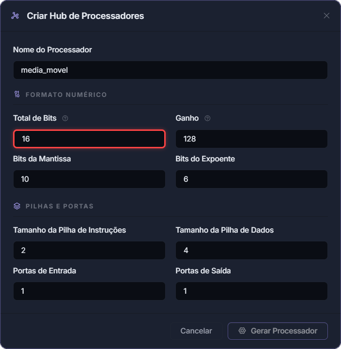
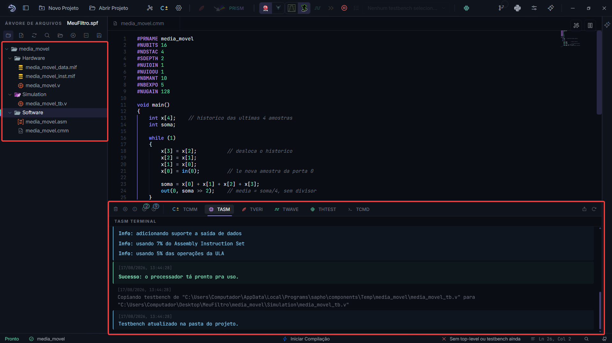
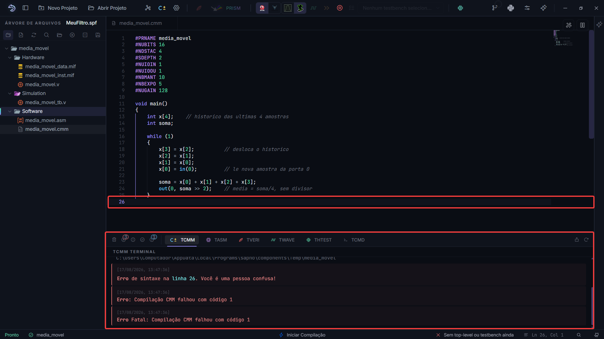
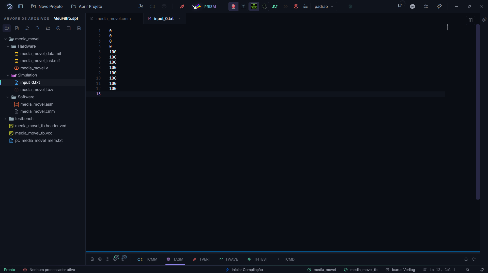
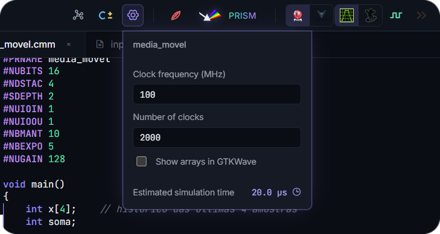
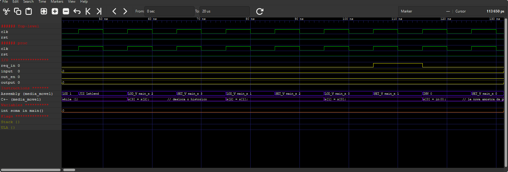
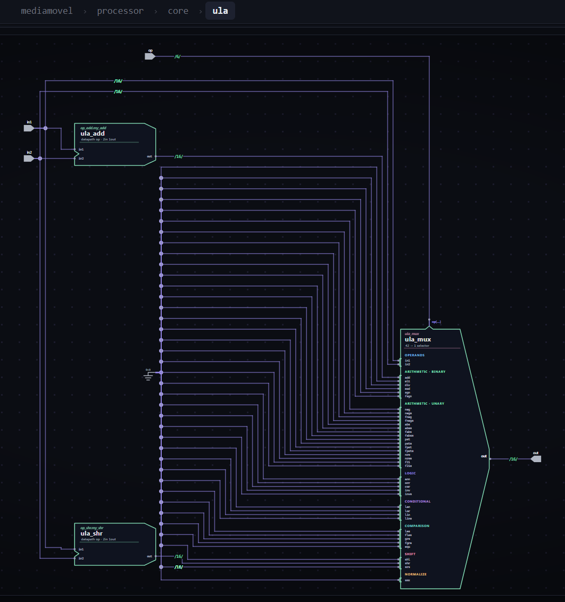
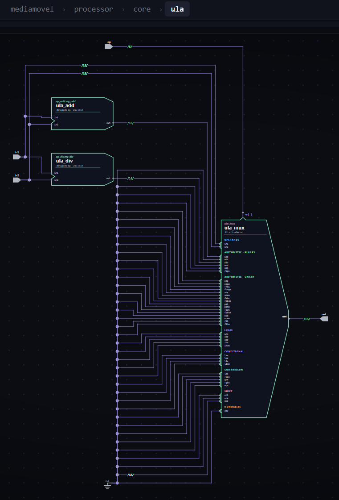

Tutorial: um processador SAPHO¶
No tutorial anterior você escreveu o circuito à mão. Agora o caminho é outro: descrever um algoritmo em C± e deixar a plataforma gerar o processador. Ao final, você terá criado um processador sob medida, compilado até Verilog, simulado e lido o resultado na onda. Reserve uns trinta minutos.
O que vamos construir
Um filtro de média móvel de quatro amostras: lê um valor pela porta de entrada, guarda as quatro últimas leituras, soma e devolve a média pela porta de saída. É o filtro mais simples do processamento de sinais, e exercita em vinte linhas tudo o que um projeto SAPHO tem: entrada e saída, um vetor na memória, aritmética e um laço infinito.
Passo 1: criar o projeto¶
Crie um projeto chamado MeuFiltro, como no tutorial anterior: Novo Projeto, nome, local, Gerar Projeto.
Aviso
Se você ainda estiver com o projeto do contador aberto, feche-o ou confira os papéis antes de simular. Top Level e Testbench Top são marcações do projeto ativo, e um contador.v esquecido no papel de Top Level faz a compilação do filtro simular o circuito errado, sem erro nenhum. A barra de status mostra os dois o tempo todo: neste tutorial, os dois nomes têm que ser do media_movel.
Passo 2: criar o processador¶
Clique em Hub de Processadores, na barra superior.
Preencha conforme a tabela e clique em Gerar Processador.
Campo |
Valor |
Por quê |
|---|---|---|
Nome do Processador |
|
Vira o nome da pasta, do módulo Verilog e da diretiva |
Total de Bits |
|
Largura da palavra; 16 bits bastam para sinais de instrumentação |
Bits da Mantissa |
|
Precisão do ponto flutuante |
Bits do Expoente |
|
Faixa do ponto flutuante |
Ganho |
|
Usado só por |
Pilha de Instruções |
|
Profundidade de chamadas de função aninhadas |
Pilha de Dados |
|
Complexidade das expressões |
Portas de Entrada |
|
Uma porta para receber as amostras |
Portas de Saída |
|
Uma porta para publicar a média |
{kind=link}

Figura 16 A validação roda enquanto você digita, e o botão só habilita com tudo consistente.¶
Importante
A regra que mais reprova o formulário: o total de bits deve ser a soma da mantissa, do expoente e do bit de sinal. Aqui, \(16 = 10 + 5 + 1\). É uma exigência estrutural do hardware de ponto flutuante, explicada em Ponto flutuante customizado.
{kind=link}

Figura 17 Um campo fora da regra fica com a borda vermelha e trava o botão.¶
Confira: a árvore mostra media_movel com as pastas Software, Hardware (vazia) e Simulation (vazia). O arquivo media_movel.cmm nasceu com o cabeçalho preenchido pelo formulário.
Passo 3: escrever o algoritmo¶
Abra Software/media_movel.cmm e substitua o conteúdo por:
1#PRNAME media_movel
2#NUBITS 16
3#NDSTAC 4
4#SDEPTH 2
5#NUIOIN 1
6#NUIOOU 1
7#NBMANT 10
8#NBEXPO 5
9#NUGAIN 128
10
11void main()
12{
13 int x[4]; // historico das ultimas 4 amostras
14 int soma;
15
16 while (1)
17 {
18 x[3] = x[2]; // desloca o historico
19 x[2] = x[1];
20 x[1] = x[0];
21 x[0] = in(0); // le nova amostra da porta 0
22
23 soma = x[0] + x[1] + x[2] + x[3];
24 out(0, soma >> 2); // media = soma/4, sem divisor
25 }
26}
Salve com Ctrl+S. Três observações sobre o programa:
- As nove primeiras linhas são diretivas
Não são código executável: configuram o hardware que será gerado. O formulário as escreveu, e a partir de agora o arquivo é a fonte da verdade. Editar uma diretiva muda o processador na próxima compilação.
- O
while (1)é a forma canônica O programa modela um circuito, e circuitos não terminam: processam amostras para sempre.
- A divisão virou deslocamento
soma >> 2dá o mesmo resultado desoma / 4, mas/instanciaria um divisor inteiro, um dos blocos mais caros da ULA. O deslocamento sai quase de graça. Você vai ver essa diferença com os próprios olhos no passo 7.
Passo 4: compilar¶
Com o .cmm em foco, clique em Compilar C±. Três compiladores rodam em sequência:
flowchart LR
A[".cmm"] -->|cmmcomp| B[".asm"]
B -->|appcomp| C["endereços<br>resolvidos"]
C -->|asmcomp| D[".v + .mif<br>+ testbench"]
O terminal TCMM mostra a tradução para assembly; o TASM mostra a montagem e, o mais interessante, os avisos de recurso instanciado: cada bloco de hardware que o seu programa ligou no circuito.
{kind=link}

Confira: a pasta Hardware ganhou media_movel.v (o processador), media_movel_inst.mif e media_movel_data.mif (as memórias). Em Simulation apareceu o testbench gerado.
Se a compilação falhar, vá à primeira mensagem de erro, não à última. A referência de linha é um link que abre o editor no ponto exato.
{kind=link}

Passo 5: preparar o estímulo e simular¶
O testbench gerado alimenta cada porta de entrada com um arquivo de texto, um valor por linha, e grava cada porta de saída em outro.
Na visão Pastas, botão direito em
media_movel/Simulation, Novo arquivo, nomeieinput_0.txt.Escreva um degrau: quatro zeros e depois valores 100.
0
0
0
0
100
100
100
100
100
100
100
100
{kind=link}

Confirme na barra: simulador Icarus Verilog, visualizador GTKWave.
Clique em Analisar Verilog.
Se a simulação acabar antes do resultado
Quase sempre é o número de ciclos. Clique na engrenagem ao lado do botão C± e aumente o valor, que por padrão é 2000. O mesmo painel ajusta a frequência de clock e mostra o tempo simulado estimado.
{kind=link}

Passo 6: ler a forma de onda¶
O visualizador abre com os sinais já agrupados, nomeados e coloridos, uma curadoria feita pela AURORA.
{kind=link}

Figura 18 O degrau entra e sai suavizado em quatro passos, o comportamento esperado de uma média móvel de quatro amostras.¶
Procure na janela:
as variáveis
x[0]ax[3]deslizando a cada amostra;somasubindo em degraus de 100 conforme o histórico se preenche;a porta de saída com o degrau suavizado;
as trilhas de texto que mostram, a cada ciclo, a instrução assembly executada e a linha do seu C± correspondente. É o seu programa rodando dentro do hardware, em sincronia com o clock.
Os valores de saída também ficam em Simulation/output_0.txt, prontos para uma planilha ou um script.
Passo 7: ver o circuito por dentro¶
Botão direito em
Hardware/media_movel.v, Definir como Top Level.Clique em Abrir PRISM.
O PRISM desenha o circuito como um diagrama navegável: clique em um módulo para entrar nele.

Dica
O experimento que mais ensina: troque soma >> 2 por soma / 4, recompile e clique em Recompile no PRISM. Um divisor inteiro aparece no diagrama, e o TASM anuncia o bloco novo. Desfaça e ele some. É a relação entre construção de linguagem e custo de hardware, tornada visível.
Para enxergar o divisor, desça até a ULA: no diagrama recompilado, clique no processador para entrar nele e depois em ula. No nível do topo nada muda de aparência, porque as portas externas do processador continuam as mesmas; o que muda é o conteúdo da unidade aritmética.
A comparação é direta. Com soma >> 2, dentro da ula moram o somador e o deslocador; com soma / 4, o deslocador dá lugar ao divisor, um bloco visivelmente mais caro. É o generate if do capítulo Os módulos HDL do SAPHO por dentro acontecendo à sua frente: o parâmetro SHR foi a zero e o DIV foi a um.
Com  |
Com  |
{kind=link}
{kind=link}
Fica o convite para o capítulo do PRISM: além do diagrama, ele tem um modo Simular, que liga o módulo da tela com relógio e entradas clicáveis. A ula é um bom alvo, pequena o bastante para o modo aceitar, e dá para ver o divisor dividindo. O tour completo está em PRISM: o visualizador de RTL.
O que você aprendeu¶
Um processador é uma pasta com
Software,HardwareeSimulation, criada pelo Hub.As diretivas no topo do
.cmmdefinem o hardware; o corpo define o comportamento.Compilar produz Verilog, imagens de memória e um testbench, por três compiladores encadeados.
A simulação lê
input_N.txte gravaoutput_N.txt.A onda mostra as suas variáveis pelo nome e a linha do seu código a cada ciclo.
Escolhas de linguagem têm custo em hardware, e o PRISM mostra esse custo.
Exercícios¶
Mude o filtro para média de 8 amostras. O que precisa mudar além do vetor e do deslocamento?
Acrescente uma segunda porta de saída (
#NUIOOU 2) publicando a amostra crua em paralelo com a média, e compare as duas curvas na onda.Troque
soma >> 2porsoma / 4, recompile e meça a diferença: no relatório do TASM e no diagrama do PRISM.Sature a saída com
pset()para o filtro nunca publicar valor negativo, e teste com um degrau que desce.
Siga para a linguagem: A linguagem C± essencial. Ou, se preferir ver os detalhes da cadeia de compilação, Compilação e artefatos.